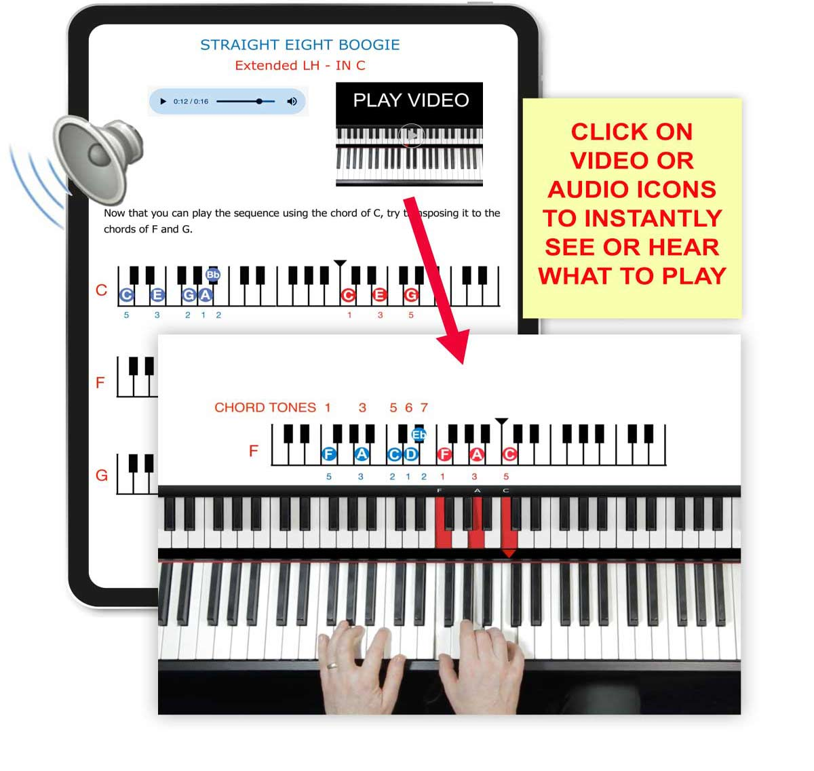
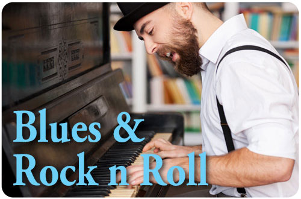
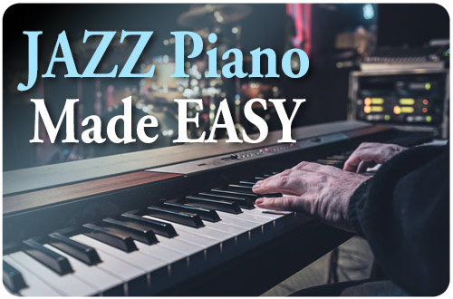
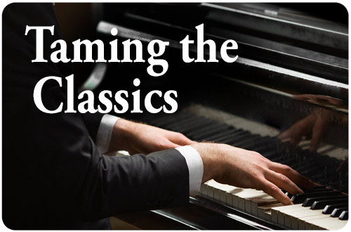
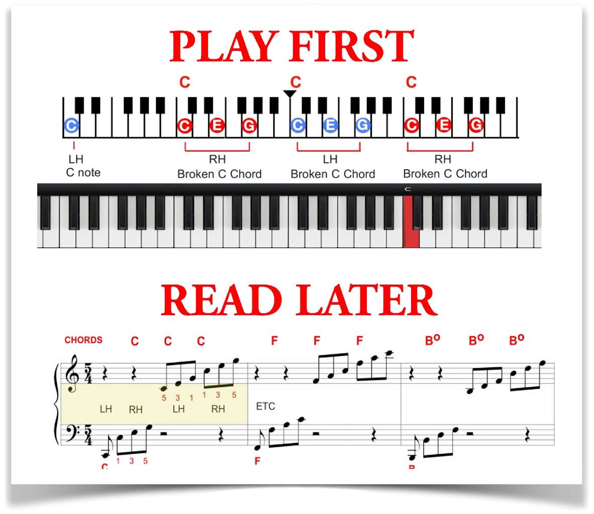
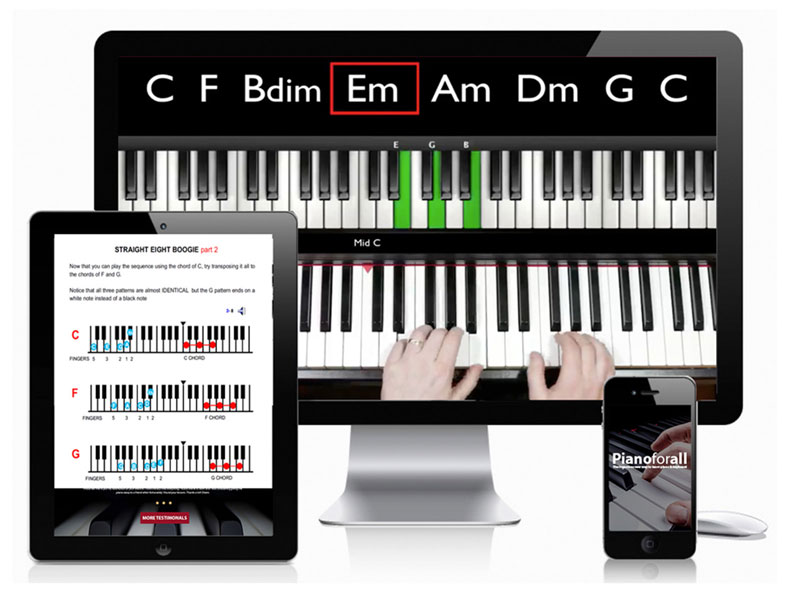

Pianoforall Review 2026: Learn Piano at Home with Interactive eBooks, Video Lessons and Audio Training
If you have ever wanted to sit at a keyboard and play real music without spending years stuck on dry theory, Pianoforall is one of the online piano programs many beginners discover first. This guide explains how it works, what is included, and why its chord-based learning path can feel more practical for everyday learners.
Disclosure: this page may contain a sponsored referral link. We aim to keep the guide useful, clear and based on product information available from the provided materials.
Why this Pianoforall review matters for beginners
Most people do not quit piano because they hate music. They quit because the first steps feel too slow. A new learner buys a keyboard, opens a beginner book, sees staff lines, finger numbers, unfamiliar symbols and exercises that do not sound like music. The dream was to play songs, but the first month often becomes a fight with notation and boredom. Pianoforall takes a different approach. Instead of forcing you to wait months before anything sounds good, the course begins with rhythm-style piano and chord patterns so you can experience musical progress early.
That is the central hook of the program. It is not trying to be a traditional conservatory curriculum. It is built for ordinary people who want to learn piano at home, understand chords, play recognizable progressions, build confidence, and gradually move into blues, jazz, ballads, improvisation, reading music and classical pieces. For readers in the United States, Germany and Australia searching for online piano lessons that do not require commuting to a teacher every week, this digital course format is attractive because it can fit around school, work, family and personal practice time.
The product materials describe Pianoforall as a step-by-step course designed to take complete beginners toward an intermediate level. The materials also highlight a large student base, interactive learning content and access across common devices. This review-style guide does not promise that anyone will become a professional pianist overnight. Piano still requires practice. But a course can make the beginning easier, and that is where Pianoforall positions itself strongly.
Want to check the current official offer?
The safest way to see current pricing, access details and any active package information is through the official Pianoforall page.
Check Official AccessWhat is Pianoforall?
Pianoforall is a digital piano and keyboard course created around interactive eBooks, video demonstrations and audio examples. The aim is simple: help beginners learn practical piano in a way that feels musical from the start. Instead of beginning only with note-reading drills, the course introduces rhythms, chords and patterns that appear in many popular songs. When learners understand those building blocks, they can start hearing how songs are built and how piano parts fit together.
The official materials describe the course as suitable for complete beginners, people who already play a little but want to improve, players of other instruments who want to add keyboard skills, and learners who can read music but struggle to play by ear. That wide audience matters because many adults and teens feel stuck between beginner books that are too basic and advanced lessons that assume too much knowledge. Pianoforall tries to bridge that gap with a guided sequence.
One of the reasons the course stands out is its layered learning style. Instead of giving you only written instructions, it uses keyboard diagrams, audio, video, and practical examples. For visual learners, this matters. Seeing where the notes are, hearing the rhythm, then copying the pattern can be easier than trying to decode everything from a page. The course also encourages learners to understand patterns, shapes and chord movement. That can make the keyboard feel less like a mystery and more like a map.
For people comparing online piano lessons, the biggest question is not only “Is there a lot of content?” The better question is “Will I know what to do next?” Pianoforall is designed as a course path, not a random pile of videos. The structure starts with immediate playing and then expands into styles and theory. That matters because beginners often fail when they have too many scattered tutorials and no clear route.

The learning system is built around action, not waiting
Every section is designed to give the learner something practical to try. You are not only reading about music. You are watching, listening, copying, repeating and connecting the idea to real playing.
Open Official Pianoforall PageHow Pianoforall works step by step
The course begins with rhythm-style piano. This is important because rhythm piano is one of the fastest ways for a beginner to sound musical. When you learn a chord pattern and rhythm, you can create the feel of a song even before you know every detail of notation. That early win is powerful. It gives learners a reason to come back tomorrow, and the next day, and the next week.
After rhythm piano, the course expands into chord changes, inversions and speed-building. Inversions are a practical tool because they let you move between chords without jumping all over the keyboard. Many beginners struggle because their hands move too far and too slowly. Learning close chord shapes can make playing smoother, and it can make songs feel more natural. Pianoforall places this idea early enough that learners can use it across many styles.
From there, the course moves into ballads, blues, rock, jazz, improvisation, advanced chords, classical pieces, scales and memory tricks. This matters because it gives the learner variety. A beginner who only practices one style may get bored. A beginner who sees how the same chord knowledge appears in pop, blues, jazz and classical music begins to understand the deeper language of piano.
The method also includes playing by ear and reading music. That combination is valuable. Some courses focus so heavily on reading that students cannot play unless a page is in front of them. Other courses teach only copying by ear and leave the learner without notation skills. Pianoforall attempts to connect both. It introduces the ear first, then shows how reading can grow from practical playing experience. That can be especially helpful for learners who tried traditional lessons before and felt overwhelmed.
For someone in the USA, Germany or Australia, this means the course can be used as a home learning system without scheduling travel, paying weekly lesson fees or relying on one local teacher’s availability. You still have to practice, but the path is always there when you open the course.
What you learn inside the course
Rhythm-style piano
Start with popular rhythms, chord progressions and patterns that make your playing sound more complete early in the journey.

Blues and rock patterns
Learn energetic styles inspired by classic blues and rock piano sounds, giving your practice a stronger groove and personality.

Jazz piano made easier
Explore jazzy chords, riffs, scales and patterns without jumping straight into intimidating theory.

Reading and classics
Build toward reading music while learning classical pieces and connecting notation to the keyboard in a more natural way.
The reason each scroll gives the reader something new
A strong landing-style article should not repeat the same sales message again and again. It should answer the next question the reader has before they leave the page. First, the reader wants to know what the product is. Then they want to know if it is beginner-friendly. Then they want to know what is inside. Then they wonder whether it works on their device, whether they need a real piano, whether it suits their learning style, and whether the purchase feels safe. This page is structured in that order so every section removes one more doubt.
For Pianoforall, the biggest hook is the promise of practical progress. Many people do not want to become concert pianists. They want to play songs for themselves, impress family, understand music better, write melodies, accompany singing, or finally use the keyboard they bought months ago. A course that starts with real rhythms speaks directly to that desire. The learner does not have to wait until they can read complex music before enjoying the instrument.
The second hook is convenience. Online piano lessons are popular because people want control over time and pace. A beginner in New York, Berlin, Sydney, Melbourne, Los Angeles, Hamburg, Munich, Brisbane or Perth can practice when life allows it. Early morning, late evening, weekend, or after school, the lessons are there. That is a major advantage over fixed appointment lessons.
The third hook is the content format. Interactive eBooks with embedded-style learning materials can make the course feel organized. Instead of a long video library where the learner gets lost, each lesson sits inside a structured path. The learner can read, watch, listen and practice inside the same learning journey. That makes the product easier to understand and easier to return to.
Ready to see the course layout and current package?
Visit the official page to view the latest offer, course access details and package information before deciding.
View Pianoforall Official PageWho is Pianoforall for?
Pianoforall is best suited for learners who want a practical, song-focused path. It can suit complete beginners who feel nervous about traditional music reading. It can suit adults who learned a little as children but forgot most of it. It can suit guitarists, singers and producers who want keyboard skills for songwriting. It can suit busy learners who need online piano lessons they can open on demand. It can also suit people who like visual explanations, keyboard diagrams and audio examples.
The course may be especially appealing if you have tried free video tutorials and ended up confused. Free tutorials can be useful, but they often lack order. One video teaches a chord. Another teaches a pop song. Another teaches a scale. After a while, the learner has fragments but no system. Pianoforall tries to turn those fragments into a progression. You learn a rhythm, then a chord idea, then a style, then a more advanced application.
It is also useful for people who want to understand music instead of memorizing one song at a time. When you learn only one song, you may feel good for a few days, but the skill may not transfer. When you learn chords, progressions, inversions and patterns, you begin building reusable musical tools. Those tools can appear in many songs. That is why the course’s chord-based path is a strong selling point for beginners.
However, the learner should be realistic. A course can guide you, but it cannot practice for you. You need to sit at the keyboard, repeat the patterns, listen carefully and give your hands time to adapt. If you can practice consistently, even for short sessions, the course format becomes much more powerful.

Play by ear, then connect it to music reading
The course materials emphasize a practical route: hear the sound, see the keyboard pattern, play it, and then connect that experience to reading and deeper theory. This can make learning feel more musical and less mechanical.
Start from the Official PageWhy the chord-based method feels faster
Chords are the foundation of countless songs. Once a beginner learns common chords and understands how they move, the piano starts making sense. Instead of seeing eighty-eight separate keys, you begin seeing groups, shapes and relationships. This is why chord-based piano can feel faster for people who want to play popular music. You are not ignoring theory. You are learning theory through sound and use.
Rhythm is the other key. A simple chord progression can sound plain if played without rhythm. Add a good rhythm pattern, and suddenly it sounds like music. Pianoforall begins with this idea because it creates excitement. When a learner hears a full-sounding pattern coming from their own hands, they feel the possibility. That feeling is important because motivation drives practice.
The program’s sections on chord magic, advanced chords and style-based playing help the learner go beyond basic triads. This is where the course becomes more than a beginner booklet. You start seeing how small chord changes create emotion. You learn how ballads feel different from blues, how jazz voicings create color, and how classical pieces connect to reading and finger control.
For affiliate-style buyer intent, this is the strongest message: Pianoforall does not only sell information. It sells a pathway from “I wish I could play” to “I know what to practice next.” That is what many beginners actually need.
Inside the learning experience: video, audio and visual guidance
Learning piano through text alone can be difficult. You might read an explanation, but you still do not know how the rhythm should feel. You may see a note, but you do not know how it should sound. Pianoforall uses audio and video support so the learner can connect the idea to a real example. That is helpful for rhythm, timing and confidence.
Video lessons let you observe hand movement and keyboard position. Audio examples let you hear the target sound. Written guidance gives the lesson structure. Keyboard diagrams help you locate the pattern. When these layers work together, the learner has more than one way to understand the lesson. This matters because not everyone learns the same way.
Visual learners may appreciate the focus on shapes and patterns. Ear-based learners may appreciate hearing the rhythms. Readers may appreciate the organized eBook format. Busy learners may appreciate being able to pause, replay, repeat and return to the same lesson without pressure. This is one reason digital courses can work well for self-paced music learning.
Another benefit is that the course does not demand a grand piano. A keyboard can be enough to begin. For many beginners, that lowers the barrier. You can start where you are, build the habit, and upgrade later if your commitment grows.
What makes the offer feel practical for home learners
Traditional piano lessons can be excellent, but they can also be expensive and difficult to schedule. Weekly lessons may cost a lot over time, and the learner may only get a short window with the teacher. If you miss a week, momentum can drop. Online piano courses solve a different problem. They give the learner repeat access to the explanation, the example and the practice path.
Pianoforall also emphasizes a one-time payment model in its product materials. That can appeal to people who dislike ongoing subscriptions. A clear purchase can feel easier than another monthly bill. The official page is the right place to check the current price and any active deal, because offers can change. The key point is that the course is positioned as a full digital learning package rather than a drip-fed subscription.
For people in the USA, Germany and Australia, self-paced access is especially useful because time zones and busy schedules can make live lessons difficult. A learner can practice after work, before school, during the weekend or whenever the house is quiet. If a lesson feels hard, they can replay it. If it feels easy, they can move forward. This control is one of the biggest reasons online learning keeps growing.
There is also a psychological benefit. Some beginners feel embarrassed playing in front of a teacher. Practicing alone at home can reduce that pressure. Once confidence grows, the learner may feel more comfortable playing for family or joining live lessons later. Pianoforall can act as the first step that makes the instrument less intimidating.
Check the official package before you decide
If the learning path sounds right for you, use the official page to review current access, price and guarantee details.
Check Pianoforall TodayThe course modules create a “next step” feeling
A good landing page keeps attention by offering a new reason to continue reading. A good course keeps motivation by offering a new skill to unlock. Pianoforall’s module structure does this well. The learner does not only see one type of piano. They see rhythm, blues, rock, chord movement, advanced chords, ballads, improvisation, jazz, classical reading, scales and exercises. That variety makes the course feel bigger than a beginner pack.
Imagine the learner’s journey. First, they want to play something that sounds like a song. Rhythm piano answers that. Then they want stronger energy. Blues and rock answer that. Then they want smoother chord changes. Inversions answer that. Then they want emotion. Ballad style answers that. Then they want creativity. Improvisation and songwriting sections answer that. Then they want sophistication. Jazz and classical sections answer that. Each stage offers a new hook and a new reason to keep going.
This is important for conversions too. When a visitor sees that the course covers multiple musical directions, the offer feels more complete. It is not just “learn one song.” It is a pathway to broader keyboard confidence. That makes it easier for a buyer to justify the purchase, especially if they have tried smaller tutorials before and felt limited.
The best way to present this kind of product is not with pressure. It is with clarity. Show the reader the journey, answer their doubts, and make the next step easy. That is why the official button appears after key sections rather than only at the end.
Can beginners really use it?
Based on the product materials, Pianoforall is built for beginners. That does not mean every lesson will feel easy on the first try. It means the course starts from accessible musical patterns and builds upward. A complete beginner still needs patience. Your fingers may feel slow. Chord changes may feel awkward. Rhythm may take repetition. But this is normal. The value of a guided course is that it gives you a sequence instead of leaving you to guess.
A beginner should use the course in short, focused sessions. Twenty minutes of careful practice can be better than two hours of distracted playing. Start with one rhythm. Repeat it until it feels steady. Add a chord change. Slow it down. Speed comes later. If the course shows a pattern that sounds advanced, remember that every strong player once had to repeat simple movements until they became natural.
The course can also help returning learners. If you took piano lessons years ago but never learned to play freely, the chord and rhythm approach may feel refreshing. If you can read notes but cannot improvise, the play-by-ear sections can fill a gap. If you are a songwriter, the chord and style sections can help you build accompaniment ideas.
That broad usefulness is one reason Pianoforall is often discussed as a practical online piano course rather than a narrow song tutorial. It gives beginners a start, but it also gives motivated learners room to grow.

Learn on the devices you already use
Digital access can make piano practice easier to fit into real life. Open the lesson, place your device near the keyboard, replay the example and move at your own pace.
Go to Official Course PagePricing, access and money-back guarantee information
Prices and offers can change, so the responsible approach is to check the official Pianoforall page for current details. The product materials emphasize a one-time payment and a money-back guarantee period. This is useful because it reduces the fear of trying a digital course. Before purchasing, read the checkout page carefully, check what is included, confirm the refund period and make sure the payment page matches the official offer.
When comparing the cost to traditional lessons, think about total learning value. A few private lessons may cost more than an entire digital course, depending on your area. That does not mean digital learning replaces every teacher. It means a structured course can be a cost-effective first step, especially if you are still discovering whether piano will become a long-term habit.
The purchase decision should come down to fit. If you want live personal correction every week, you may still prefer a private teacher. If you want a self-paced piano system you can use repeatedly at home, Pianoforall becomes a more compelling option. Many learners choose a digital course first, build confidence, and later add live coaching if they want more feedback.
Use the official page to confirm current pricing, device access, downloadable materials and guarantee terms. Avoid random copies or unofficial downloads. Besides being unfair to the creator, unofficial copies may be outdated, incomplete or unsafe. The official route is the simplest and safest way to get the correct materials.
FAQ: common questions before visiting the official page
Do I need a real piano?
No. Many beginners start with a keyboard. A full-size weighted keyboard can feel more realistic, but the most important thing is to begin practicing consistently with the instrument you have.
Is Pianoforall only for adults?
The course can be useful for different age groups, but younger learners may benefit from parent or teacher support. The main requirement is the ability to follow lessons and practice regularly.
Does it teach sheet music?
The course materials describe a path that includes reading music while also teaching play-by-ear skills. This combination is one of its key attractions for beginners who do not want to start with notation only.
How much practice is needed?
Practice time varies, but short daily sessions are usually better than rare long sessions. Consistency helps your hands, ears and memory build together.
Can it help with pop, blues and jazz?
Yes, the course materials include modules that cover rhythm-style piano, blues, rock, jazz, ballads and more. That variety is one of the reasons the program appeals to learners who want practical styles.
Where should I buy it?
Use the official Pianoforall page so you can check the latest package, current price, access details and guarantee terms.
Final verdict: is Pianoforall worth checking out?
Pianoforall is worth checking out if you want a practical online piano course that begins with real musical patterns instead of making you wait months to enjoy the instrument. Its biggest strength is the way it combines rhythm, chords, visual guidance, audio, video and a step-by-step path. For beginners in the USA, Germany and Australia looking for a flexible way to learn piano at home, the course has the right kind of structure: clear, portable, style-based and focused on usable skills.
The best reason to visit the official page is simple. If you are still reading this, you probably already want to play. The question is whether you want to keep guessing through random free videos or follow a complete course designed to take you from basic rhythm patterns toward more confident piano playing. Pianoforall is not magic, and it will not practice for you. But it can give you the map, the examples and the next lesson when motivation is high.
If the idea of playing ballads, pop rhythms, blues, jazz ideas, classical pieces and your own melodies excites you, this is the moment to look at the current official offer. Check the course details, review the guarantee, and decide while the reason you came here is still clear: you want to finally make progress on piano.
Visit Official Pianoforall Page Now